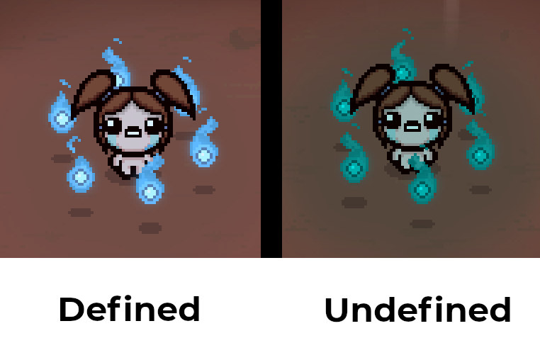

Creating item wisps
Author(s): AeronautTags:
Wisps are a type of familiar introduced in the Repentance DLC which can be spawned by the Book of Virtues item. Nearly every active item has an associated wisp with custom effects reminiscent of the active item. Isaac's modding API has a robust system for adding custom wisps for your own modded active items.
Registering the wisp⚓︎
The first step to creating a custom wisp is to have it registered in a wisps.xml file present in your mod's content folder. The basic structure of a wisps.xml file looks like this:
1 2 3 4 5 6 7 | |
For every XML file, there is a tag that goes from the start of the file to the end of the file, and multiple "child tags" that act as the individual entries. In this instance, wisps.xml entries will start with <wisps> and end with </wisps>. There are two main child tags in this file to keep note of: the color tag and wisp tag.
The color tag⚓︎
The color tag stores a color for use inside your wisps.xml file, with a given name and RGB color values. The RGB attributes that can be entered are r, g, b, or, og, ob, cr, cg, cb, and ca. Each of these attributes accept an integer value from 0 to 255.
Similar to the Color class in the API, each of these attributes correspond to a member of the Color object. r, g, and b control the wisp's tint, or, og, and ob control the wisp's color offset, and cr, cg, cb, and ca control the wisp's colorize.
Note that the color defined in xml will not affect the wisp entity's Color value in game. In this example, the wisp would have a blue color in game while having its Color equal to Color.Default (Color(1, 1, 1, 1)).
Warning
If a wisp attempts to reference a color tag that has not been defined in the same file, it will instead default to a teal color. To avoid this from occurring on accident, and for ease of use, it's convenient to copy the color tags at the top of the game's wisps.xml file, present in the resources folder (resources-dlc3 for Repentance users and extracted_resources for Repentance+ users).

The wisp tag⚓︎
The wisp tag is where the appearance and behavior of a wisp is defined, and is how it is linked to your active item. The tag has several attributes to control these factors. A comprehensive list of the purpose for each attribute will be listed below.
wisp tag variables
| Attribute | Value Type | Description | Example |
|---|---|---|---|
| id | integer | Links the defined wisp to your item. The id value should be the same one the item has defined in its items.xml entry. |
id="1" |
| flameColor | string | The color of the wisp's flame. Uses the name of a color tag defined earlier in the file. | flameColor="flame_blue" |
| coreColor | string | The color of the wisp's core. Uses the name of a color tag defined earlier in the file. | coreColor="core_blue" |
| tearColor | string | The color of the tears shot by the wisp. Uses the name of a color tag defined earlier in the file. | tearColor="tear_blue" |
| coreGfx | string | Changes the appearance of the wisp's core. Uses a file path to a .png that is relative to the location defined by the parent wisps tag's gfxroot. |
coreGfx="cross.png" |
| hp | float | Defines the wisp's maximum hitpoints. Each projectile the wisp blocks causes it to lose 1 hp, while taking contact damage causes it to lose 2 hp. Default wisps have an hp value of 2. When deciding on an hp value for your wisp, keep in mind that vanilla active items with lower charge tend to have lower max hp, while higher charge or single use actives have higher max hp. | hp="3" |
| damage | float | Defines the damage the wisp's tears deal. Default is 3. This value does not affect the amount of damage wisps deal on contact with enemies. | damage="5.5" |
| layer | integer (-1, 0, 1, or 2) | Defines how close the wisp orbits the player. Default is 1. A layer value of 2 will cause it to orbit at a further distance, while a value of 0 will cause it to orbit closer. A layer value of -1 will instead cause the wisp to not follow or orbit the player. If a layer attribute isn't present, it will default to 1. Entering any other positive value will cause the game to crash when the wisp attempts to be spawned. | layer="0" |
| count | integer | Defines the number of wisps that should be spawned when the associated active item is used. Default is 1. | count="2" |
| canShoot | boolean | Defines whether the wisp shoots tears or not. Default is true. |
canShoot="false" |
| fireDelay | integer | Defines the cooldown in game ticks (30 ticks per second) before wisp can fire again after shooting a tear. This system works in a similar way to the player's MaxFireDelay stat, which is explained further in this article. Default is 30. Wisps with a fireDelay value less than 0 effectively act the same as ones with canShoot="false". |
fireDelay="45" (The wisp will shoot 1.5x slower compared to a default wisp.) |
| shotSpeed | float | Defines the shot speed of the wisp's tears. The stat works similarly to the player's shot speed stat. Default is 1. | shotSpeed="0.75" |
| tearFlags | integer | Defines what tear effect(s) the wisp's tears will have. A full list of what number corresponds to what tear effect can be referenced off of the TearFlags page on the docs. Multiple numbers can be inputted in this field, with a space separating each effect. |
tearFlags="2 34" (This wisp will shoot homing, shielded tears.) |
| tearScale | float | Controls the size of the wisp's tears. Default is 0.7. | tearScale="1.2" |
| tearVariant | integer | Defines the appearance and behavior of the wisp's tears. A full list of what number corresponds to what tear variant can be referenced off of the TearVariant page on the docs. |
tearVariant="28" (The wisp's tears will look like razors.) |
| tearFlags2 | integer | Operates identically to the tearFlags attribute, but the defined tear effect will only have a chance to be shot by the wisp, controlled by the procChance attribute. |
tearFlags2="4 22" (This wisp will have a chance to shoot tears that apply poison and burn.) |
| procChance | float | Controls the chance for tear effects defined by the tearFlags2 attribute to be fired. |
procChance="0.25" (The wisp will have a 25% chance to shoot a tear with tearFlags2's effects.) |
| tearColor2 | string | Operates identically to the tearColor attribute, but only affects tears with the effects of the tearFlags2 attribute. Uses the name of a color tag defined earlier in the file. |
tearColor2="tear_green" |
| tearScale2 | float | Operates identically to the tearScale attribute, but only affects tears with the effects of the tearFlags2 attribute. |
tearScale2="0.5" |
| damageMultiplier2 | float | Multiplies the damage that a tear with the tear effects defined by the tearFlags2 attribute will deal. |
damageMultiplier2="1.5" (The wisp's tears with tearFlags2's effects will also deal 1.5x damage.) |
| priority | integer | Controls the wisp's priority value. When wisps with the same layer are spawned by Book of Virtues while that layer has reached its cap of wisps, the newly spawned wisp will replace the oldest wisp. The priority attribute overrides this behavior, so that wisps with a priority of -1 are prioritized to be replaced instead, and wisps with a priority of 1 or more are replaced only after no wisps with a lower priority value can be replaced. Default is 0. | priority="10" |
Advanced wisp effects⚓︎
While wisps.xml provides lots of customization, not everything can be made possible with the file, such as wisps that have an effect when they disappear, or ones with special movement behavior. For effects like these, Lua code will be required to create these wisps. This section will cover some methods that can be used as a jumping off point for creating wisps with more complex effects.
The basics⚓︎
Wisps are defined as familiar entities in the game's code, so any callbacks in the modding API that affect familiars will be useful for running code on wisps. Additionally, the wisp of a given item has its Subtype value equal to the associated item's CollectibleType.
This example code snippet below will add behavior to a custom item's wisp, causing it to spawn a puddle of water every 3 seconds (assuming our custom item is called Isaac's Blueprint):
1 2 3 4 5 6 7 8 9 10 11 12 13 | |
Another common effect design for wisps is to have an effect activate when it dies. Here's an extension of the code snippet to give the wisp a death effect:
1 2 3 4 5 6 7 8 9 10 11 12 13 14 15 16 17 18 | |
Custom spawning behavior⚓︎
Wisps can have their count defined as 0 if they have special behavior with how they are spawned, like an item spawning a random amount of them on use (ex. Guppy's Head). This behavior can be emulated in Lua via a callback registered when an item is used, checking if the player has the Book of Virtues item, and adding the wisp using either player:AddWisp() or Isaac.Spawn().
Custom movement⚓︎
A layer of -1 allows for custom movement behavior for wisps. Changing the wisp's Position and/or Velocity in a MC_FAMILIAR_UPDATE callback can be used to code your own movement behavior for the wisp.